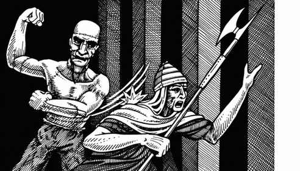
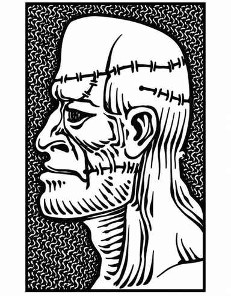

魔像 · Golem
魔像是以魔法创造的怪物，共有四种，分别见下文。除肉魔像由人类遗骸制成，其余都由土石等材料构成。创造魔像需要极强大的法术与元素力量。
生命骰数等于或高于魔像的魔法生物能够有效攻击魔像。判定生命骰数时，每 4.5 点生命值折算为 1 颗生命骰，小数向上取整。因此，肉魔像按 9 颗生命骰计算，黏土魔像按 11 颗，石魔像按 14 颗，铁魔像按 18 颗。
黏土魔像 · Clay Golem
 |
|
17 级或更高的守序善良牧师可以创造黏土魔像；若借助魔法典籍，所需牧师等级可更低。创造仪式需要“复活术”“操纵物体”“神谕术”“祈祷术”与“祝福术”。牧师必须先塑造一尊人形黏土雕像，再不间断地完成上述法术仪式。材料至少花费 20,000 金币，仪式法衣另需至少 30,000 金币。
黏土魔像受创造者牧师控制。它每参与一个近战轮，便有 1% 的累积概率被混乱邪恶灵体附身。一旦发生，魔像立即脱离控制，攻击眼前最近的活物；杀死后便继续攻击下一个，直到自身被摧毁，无法重新控制。黏土魔像对生物造成的伤害，只能由 17 级或更高牧师施展“治疗术”修复。
黏土魔像的攻击按 11 颗生命骰计算。每天一次，它在至少经历 1 个近战轮战斗后可加速 3 个近战轮；加速期间每轮攻击两次。失控的魔像若当天尚未使用此能力，会立即自行加速。
只有锤、钉头锤等钝击类魔法武器能击中黏土魔像，其他武器均无效。法术通常也无效，例外如下：“移土术”会将其击退 12 寸并造成 3–36 点伤害；“解离术”会令其速度减半并造成 1–12 点伤害；直接对其施展“地震术”会使它当轮无法移动，并造成 5–50 点伤害。
肉魔像 · Flesh Golem

 |
|
可用魔法典籍创造肉魔像，也可由高阶魔法师施展“祈愿术”“任意变形术”“强迫术”“防护普通投射物”与“强力术”创造；施法者至少须为 14 级。材料费为每点生命值 1,000 金币，制造需 1 个月。
创造者可以控制肉魔像并命令它执行简单任务（如前进、停止、杀死），也能令其暂停活动，直到某个事件发生（例如有人进入房间）。但肉魔像每参与一个近战轮，便有 1% 的累积概率陷入狂暴，随机攻击视线内的一切目标；其主人每个近战轮有 10% 概率重新夺回控制权。
肉魔像力大无穷，能砸穿普通木门与木结构。例如，砸穿带铁箍与铁铰链的橡木门需要 5–8 个近战轮。它每 3 个近战轮可对木结构造成 1 点结构伤害。
普通武器无法伤害肉魔像，魔法武器则正常生效。多数法术无效，但火焰或寒冷法术（如“火墙术”“火球术”“冰风暴”）会令其速度减半，持续 2–12 个近战轮。电击攻击会按原本应造成的伤害骰数恢复肉魔像的生命值；例如，六骰闪电箭会为它恢复 6 点生命值。
铁魔像 · Iron Golem
 |
|
创造双足人形铁魔像需要魔法典籍，或由 18 级及以上魔法师施展“祈愿术”“任意变形术”“强迫术”与“毒云术”。材料费为每点生命值 1,000 金币，制造需要 3 个月。
铁魔像始终受创造者魔法师控制，能够服从简单命令。它也可以静止不动地守卫，直到发生某个事件，例如门被打开或有人读书。
除普通攻击外，铁魔像每 7 个近战轮可向正前方喷出一次毒气云，范围为 1 寸 × 1 寸 × 1 寸。
铁魔像的力量是肉魔像的三倍，每个近战轮可造成 1 点结构伤害。只有附魔加值 +3 或更高的魔法武器能伤害它；普通武器及低于 +3 的魔法武器都无效。能够影响铁魔像的魔法攻击只有电击（如“闪电箭”），会使它速度减半，持续 3 个近战轮；魔法火焰攻击则每造成 1 点伤害便修复 1 点生命值。铁魔像会受锈蚀怪攻击。
石魔像 · Stone Golem
 |
|
可用魔法典籍，或由 16 级及以上魔法师施展“祈愿术”“任意变形术”“强迫术”与“缓慢术”，创造人形石魔像。材料费为每点生命值 1,000 金币，制造需要 2 个月。
创造者可以控制石魔像，它会理解并服从简单命令，例如攻击、停止、等待或前进；也可以令它保持静止，直到有人做出某个动作将其触发。
除普通攻击外，石魔像每隔一个近战轮，可以对正前方 1 寸内的一名对手施展“缓慢术”。石魔像的力量是肉魔像的两倍，每隔一个近战轮造成 1 点结构伤害。
普通武器无法伤害石魔像；须用附魔加值 +2 或更高的武器才能击中。只有下列法术对它有效：“化石为泥”会令其速度减半，持续 2–12 个近战轮；“化泥为石”会恢复它已受的全部伤害；“化石为肉”会令它在下一个近战轮可被普通攻击伤害。